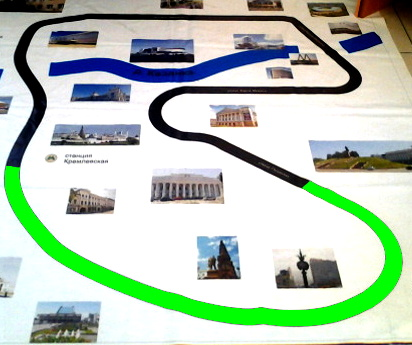

«Тукай мәйданы» метро станциясе (рус. Площадь Тукая) — «Кремль» һәм «Сукно бистәсе» станцияләре арасында урнашкан Казан метросының станциясе. Шәһәр үзәгендә урнаша. Станция Тукай ымәйданы янында булу сәбәпле алай аталды. Станция 2005 елның 27 августында беренче метро сызыгы белән ачыла. «Тукай мәйданы» — 12 колонналы, 1 утраулы платформадан торган станция. Шәһәргә берничә урында чыгарга була — Тукай мәйданы, «Кольцо», Петербург урамы.
